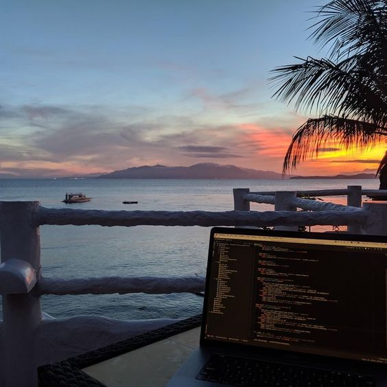

The Fun Side of INFO2180 ღ
So, web development, who honestly would've thought I'd actually enjoy it? Honestly, INFO2180 has been the most interesting course for me this semester. It’s the one class that makes me feel like a proper “coder,” if you get what I mean. I’ve been watching loads of videos and even trying a few things on my own. The whole web development experience has been surprisingly straightforward, which is what I appreciate most. I can tap into my creative side, and it actually feels like I’m having fun while learning new things. Plus, the more I dive into it, the more I realise just how versatile these skills can be for future projects.
While web development has been fun and all, cybersecurity is what really fascinates me. There's just something about understanding how systems are protected that keeps pulling me in. Honestly, both web development and cybersecurity connect more than you'd think. Learning how to build websites helps me spot potential vulnerabilities, making me more aware of security risks from the get-go. It's like, I’m learning how to create stuff but also figuring out how to protect it at the same time. The more I explore both, the more I see how they work together, and I’m really excited to dive deeper into that balance.